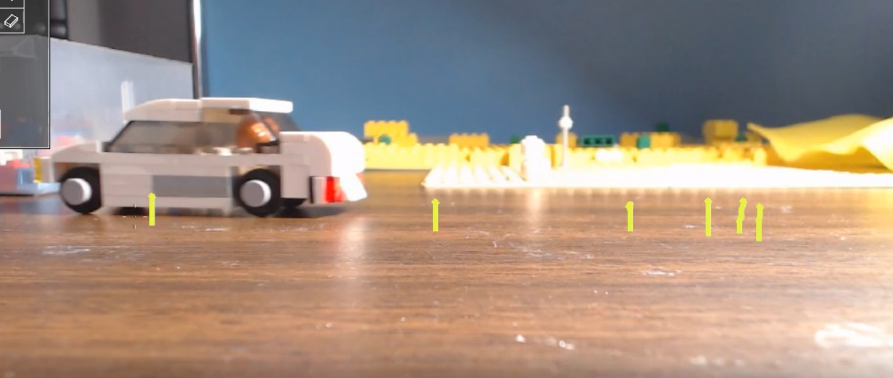
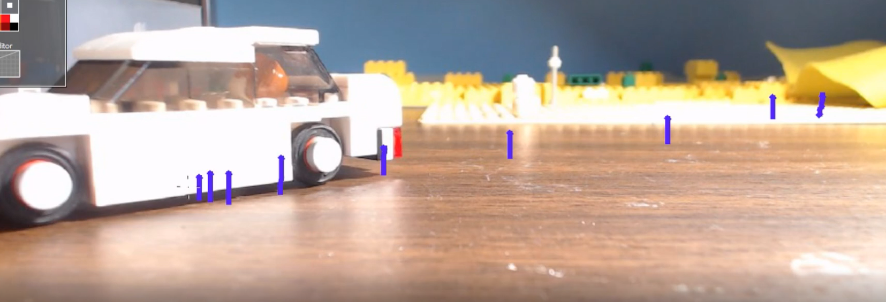
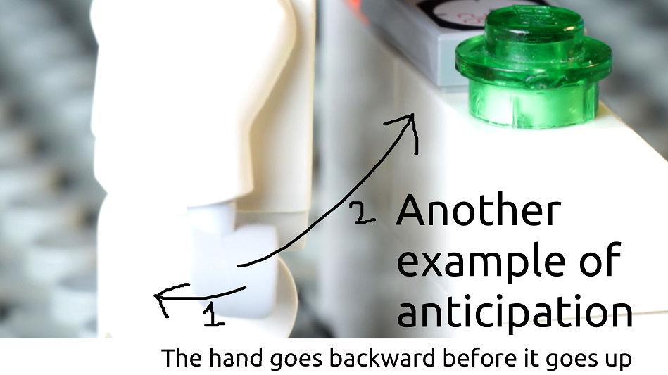
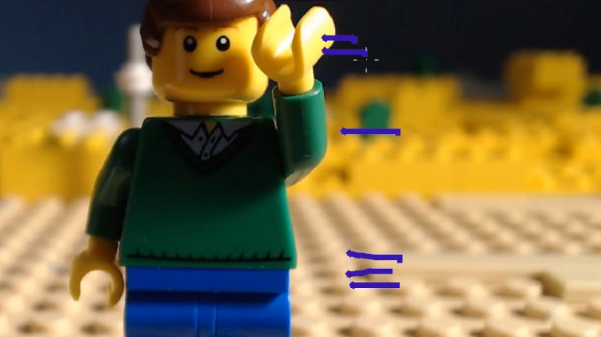
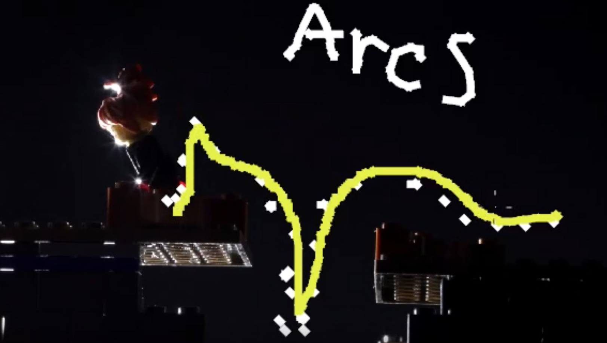
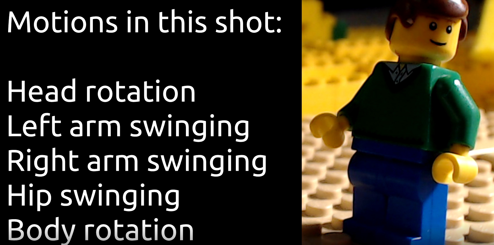

5 Ways to Improve Your Animation
Jan 15, 2021
rioforce
In this video, Rioforce takes a look at 5 principles of animation that you can implement to get smoother and better animation. Contrary to popular belief, better animation doesn't come from taking more frames. It comes from an understanding of the principles of animation and how they can be applied.
Easing
Easing, also known as “Slow in and out” is a technique where, when making a movement, you start slow and end slow to make the movement appear smooth. A car gives us a good example of this. Let's say a car starts driving from a sitting position. It doesn't just immediately start driving at 60mph, it has to accelerate first, and that starts slowly.
The dashes in the above photo represent the frames of where the car has been. You can see that there are more frames at the start of the car's animation than toward the middle or end. This is easing.
It's the same concept for easing out. After the car is driving fast, it has to slow down to stop (unless it crashes). So, to ease out, add more frames at the end to give the illusion of slowing down.
Easing applies to a lot more than just cars. It applies to every animation.
Anticipation & Follow-through
Very closely related to easing, Anticipation and follow through describes what happens before and after the desired action. Very few actions can just start without any sort of anticipation. In the video, you can see a LEGO skeleton lifting his hands up. He leads forward before raising his arms. He's anticipating the action he's about to do.
Anticipation is essentially a wind-up-and-go motion. Think of a baseball player getting ready to throw a ball. That's anticipation. Or someone pulling back before throwing a punch. Also anticipation. Same concept for animation, though often less intense or violent.
It's similar for Follow-Through. After a motion is performed, it's hard to stop on a dime. This, we follow through with our actions a little bit before returning to a relaxed position. After a car slows down and stops, it might roll back slightly as a follow-through. After someone hits a golf ball, they continue to swing because they can't just stop the club right as it hits the ball. That's the same for animation as well, though, generally more subtle.
Pacing
Pacing refers to the speed of the action that’s being animated. But I like to think of it in terms of weight. Weight informs how things are timed in animation. If a giant heavy car is being pushed, the characters wouldn't push it efforlessly down the road. They'd struggle at the beginning, maybe find it a bit easier when it gets going, and struggle at the end to stop it.
It's the same for animation. In the above picture, you can see the lines where the frames for this man's arm movement are. At the beginning, we see easing, but suddenly, we see his arm moved to the middle of his torso, then to the top, where he continues to ease out. This makes his arm movement fast. It takes fewer frames to do than what some people might consider "smooth" animation, but gives the appropriate speed to the action.
Arcs
Arcs are fun because we get to draw. What are arcs? Well, every motion generally follows an arc and doesn’t stray from it. A good visualization of arcs is this jumping animation. As you can see from my drawings, each jump has a specific arc that it follows. This jump actually has two arcs, since when she jumps, she misses. Then she has to make an arc to get back up to the platform.
When things are affected by velocity and gravity, they follow predictable paths. As you can see, the arc goes up and then down. Arcs are essentially a drawn connection of point A and point B. If there's a point C in there, it's probably two arcs. If it's not supposed to be, then the arcs are done incorrectly.
Overlapping Action
Overlapping action is basically what the name implies. It’s animating multiple things at once. This can manifest itself in a variety of ways. I like to think of it as a variety of actions happening at once. It’s more than just animating more than one character at a time.
Overlapping actions means there's lots of actions going on and being combined to make one fluid motion. In the video above, the man is slooking nervously to his left and right. If he was just turning his head, it would be one action. But! Since he is moving his arms, head, hips, and even rotating his whole body, it's overlapping action. This complex combination of motion is the core of overlapping action.
Conclusion
I hope this article and video helped you improve your animation! If you'd like to discuss this article, check out the topic on the forum or hit up the comments on the YouTube video.